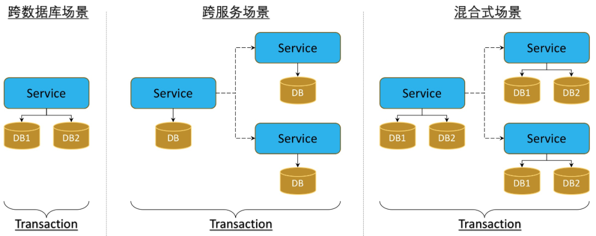
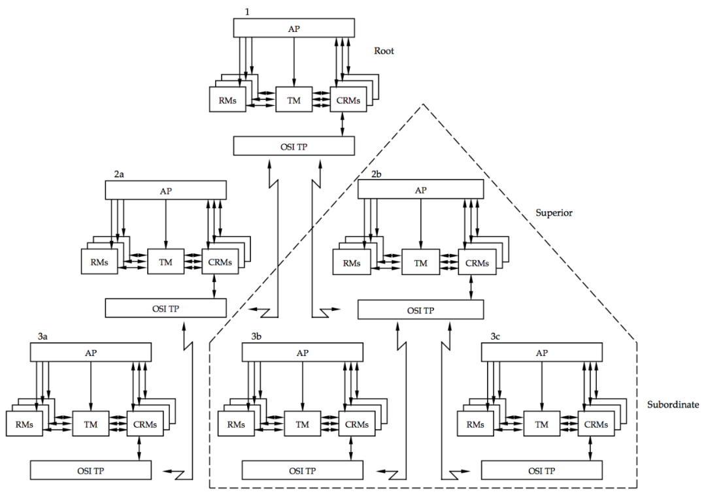
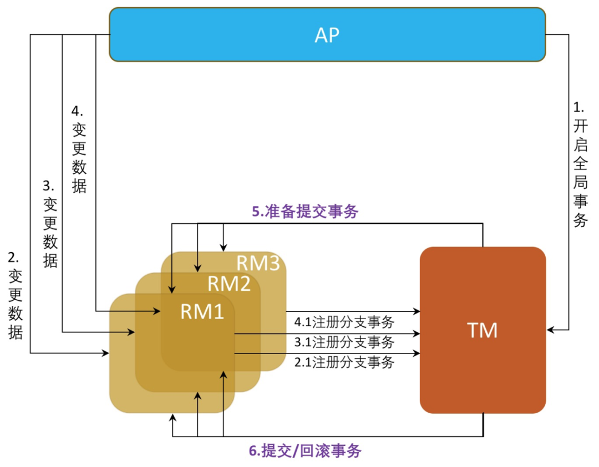
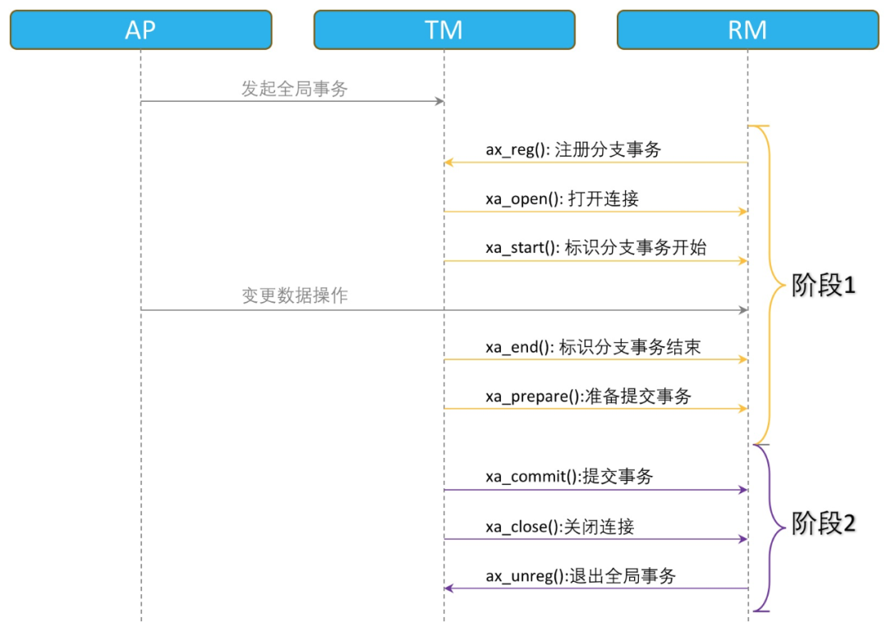
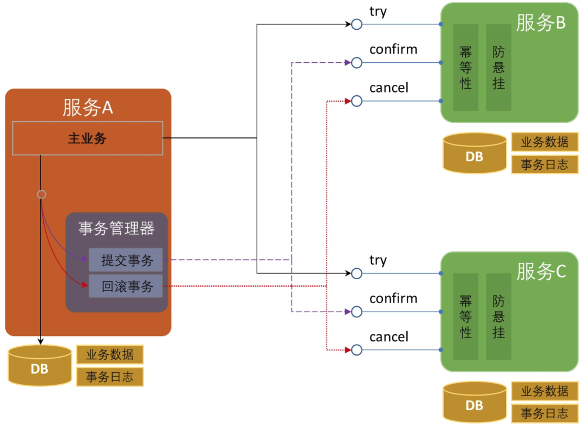
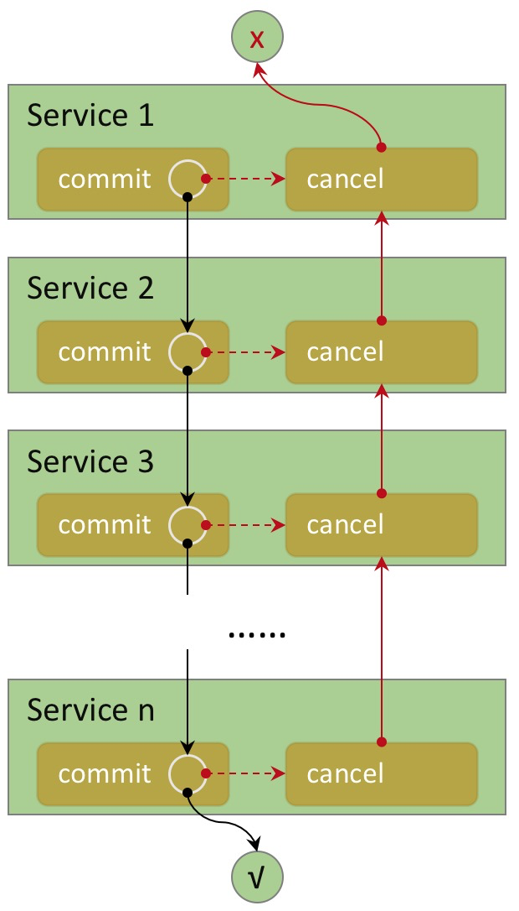
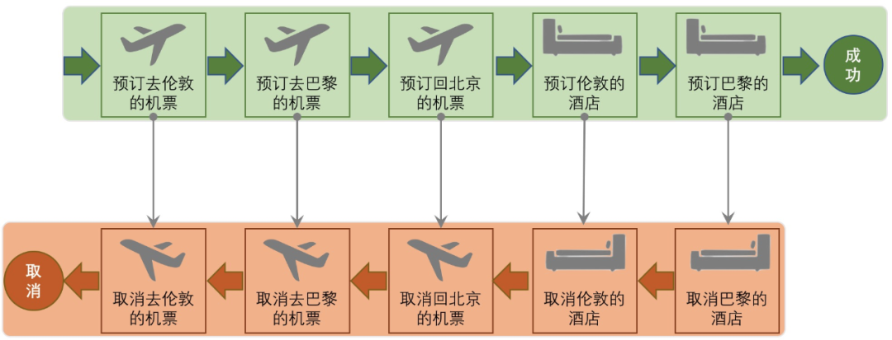
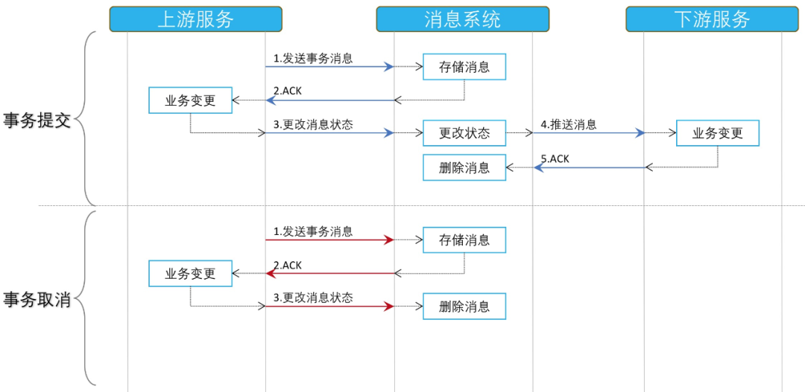
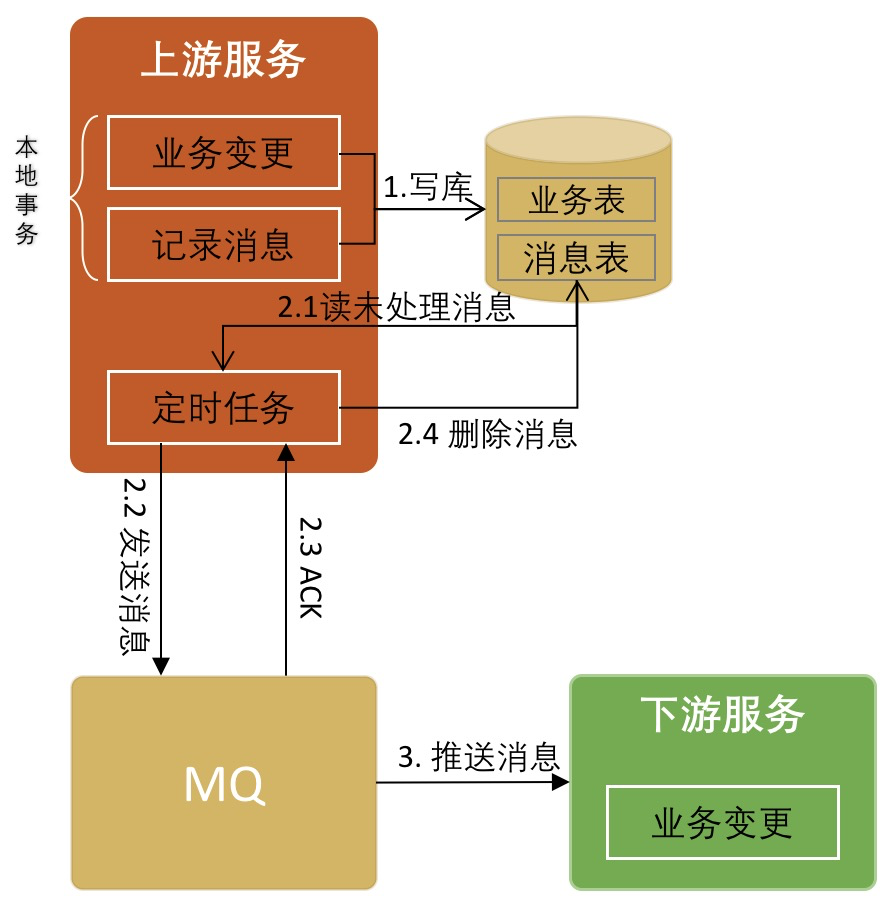
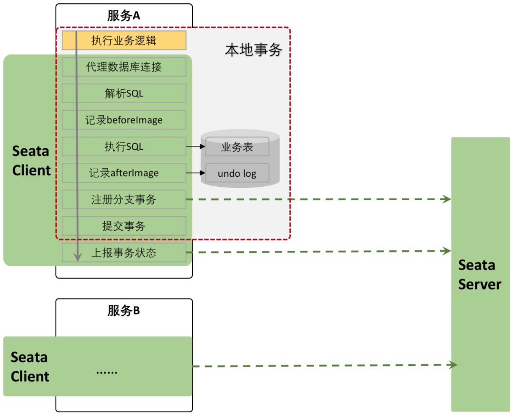

概述
事务是一组不可分组的操作集合，这些操作要么都成功执行，要么都取消执行。最典型的需要事务的场景是银行账户间的转账：假如 A 账户要给 B 账户转账 100 元，那么 A 账户要扣减 100 元，B 账户要增加 100 元，这两个账户的数据变更都成功才可算作转账成功。更严格来说，可以用 ACID 四个特性表述事务：
Atomicity：原子性，事务中的所有操作要么都成功执行，要么都取消执行，不能存在部分执行，部分不执行的状态。
Consistency：一致性，举个例子简单的理解就是，A、B 两个账户各有 100 元，无论两个账户并发相互转账多少次，两个账户的资金总额依然是 200 元。
Isolation：隔离性，并发事务之间的相互影响程度，隔离性也是分级别的：读未提交、读已提交、可重复读等。
Durability：持久性，事务完成后对数据的更改不会丢失。
单体数据库不涉及网络交互，所以在多表之间实现事务是比较简单的，这种事务我们称之为本地事务。
但是单体数据库的性能达到瓶颈的时候，就需要分库(分物理实例)，就会出现跨库(数据库实例)的事务需求；随着企业应用的规模越来越大，企业会进一步进行服务化改造，以满足业务增长的需求；当前微服务架构越来越流行，跨服务的事务场景也会越来越多。
这些都是分布式事务的需求。分布式事务是指事务的发起者、参与者、数据资源服务器以及事务管理器分别位于分布式系统的不同节点之上。
概括起来，分布式事务有三种场景：
- 跨数据库分布式事务
- 跨服务分布式事务
- 混合式分布式事务

分布式事务中涉及的参与者分布在异步网络中，参与者通过网络通信来达到分布式一致性，网络通信不可避免出现失败、超时的情况，因此分布式事务的实现比本地事务面临更多的困难。下面介绍几种常见的分布式事务解决方案。
分布式事务模式
XA Specification
最早的分布式事务产品可能是 AT&T 在 20 世纪 80 年代推出的 Tuxedo (Transactions for Unix, Extended for Distributed Operations)，Tuxedo 最早是为了电信领域的 OLTP 系统研发的分布式事务中间件，后来标准化组织 X/Open 吸收采纳了 Tuxedo 的设计思想和一些接口，推出了分布式事务规范：XA Specification。
XA 规范中定义了分布式事务处理模型，这个模型中包含四个核心角色：
RM (Resource Managers)：资源管理器，提供数据资源的操作、管理接口，保证数据的一致性和完整性。最有代表性的就是数据库管理系统，当然有的文件系统、MQ 系统也可以看作 RM。
TM (Transaction Managers)：事务管理器，是一个协调者的角色，协调跨库事务关联的所有 RM 的行为。
AP (Application Program)：应用程序，按照业务规则调用 RM 接口来完成对业务模型数据的变更，当数据的变更涉及多个 RM 且要保证事务时，AP 就会通过 TM 来定义事务的边界，TM 负责协调参与事务的各个 RM 一同完成一个全局事务。
CRMs (Communication Resource Managers)：主要用来进行跨服务的事务的传播。
下图是 XA 规范中定义的事务模型图，其中：发起分布式事务的 TM 实例称之为 root 节点，其他的 TM 实例可以统称为事务的参与者。事务发起者负责开启整个全局事务，事务参与者各自负责执行自己的事务分支。如果TM实例发起了对其他 TM 实例的服务调用，那么发起者就被成为 Superior，被调用这就被称之为 Subordinate 节点。

图源：《Distributed Transaction Processing:Reference Model, Version 3》 Page 32,Figure 3-2
XA 规范中分布式事务是构建在 RM 本地事务（此时本地事务被看作分支事务）的基础上的，TM 负责协调这些分支事务要么都成功提交、要么都回滚。XA 规范把分布式事务处理过程划分为两个阶段，所以又叫两阶段提交协议（two phrase commit）：
1）预备阶段
TM 记录事务开始日志，并询问各个 RM 是否可以执行提交准备操作。
RM 收到指令后，评估自己的状态，尝试执行本地事务的预备操作：预留资源，为资源加锁、执行操作等，但是并不提交事务，并等待 TM 的后续指令。如果尝试失败则告知 TM 本阶段执行失败并且回滚自己的操作，然后不再参与本次事务（以 MySQL 为例，这个阶段会完成资源的加锁，redo log 和 undo log 的写入）。
TM 收集 RM 的响应，记录事务准备完成日志。
2）提交/回滚阶段
这个阶段根据上个阶段的协调结果发起事务的提交或者回滚操作。
如果所有 RM 在上一个步骤都返回执行成功，那么：
TM 记录事务 commit 日志，并向所有 RM 发起事务提交指令。
RM 收到指令后，提交事务，释放资源，并向 TM 响应“提交完成”。
如果 TM 收到所有 RM 的响应，则记录事务结束日志。
如果有 RM 在上一个步骤中返回执行失败或者超时没有应答，则 TM 按照执行失败处理，那么：
记录事务 abort 日志，向所有 RM 发送事务回滚指令。
RM 收到指令后，回滚事务，释放资源，并向 TM 响应回滚完成。
如果 TM 收到所有 RM 的响应，则记录事务结束日志。

针对部分场景，XA 规范还定义了如下优化措施：
如果 TM 发现整个事务只涉及到一个 RM，那么就会将整个过程退化为一阶段提交。
如果 RM 收到的 AP 的数据操作是只读操作，那么它可以在阶段 1 就将事务完成并告知 TM 其不再参与阶段 2 的过程。会有脏读的风险。
如果 RM 在阶段1完成后，长时间等不到阶段 2 的指令，那么其可以自动提交或者回滚本地事务。这叫做 Heuristic Completion，注意这种场景有可能会破坏事务的一致性，产生异常。
XA 规范中详细定义了各个核心组件之间的交互接口，以 TM 和 RM 的交互接口为例，如下图，一次完整的全局事务，TM 和 RM 之间的交互还是比较频繁的：

事务的执行过程中，宕机和网络超时都有可能发生，针对这些异常场景，不同 XA 规范的实现，对异常处理做法可能不同，可参考如下：
TM 在阶段 1 中询问 RM 前宕机，恢复后无需做任何操作。
TM 在阶段 1 中询问 RM 后宕机，可能只有部分 RM 收到了阶段 1 的请求，因此此时需要向 RM 发起回滚请求。
TM 在阶段 1 中询问 RM 完毕，但是在就准备完成日志时宕机，因不清楚宕机前的事务协商的结果，因此恢复后需要向 RM 发起回滚请求。
TM 在阶段 1 中记录完毕事务准备完成日志后宕机，恢复后可以根据日志发起提交或者回滚的指令。
TM 在阶段 2 中记录 commit/abort 日志前宕机，恢复后可以根据日志发起提交或者回滚指令。
TM 在阶段 2 中记录事务结束日志前宕机，恢复后可以根据日志发起提交或者回滚指令。
TM 在阶段 2 中记录事务结束日志后宕机，恢复后无需做任何操作。
阶段 1 中，RM 有超时情况时，TM 按失败处理，给所有 RM 发送回滚指令。
阶段 2 中，RM 有超时情况是，TM 需要对超时的 RM 持续重复发送指令。
特点剖析
XA 两阶段提交协议设计上是要像本地事务一样实现事务的 ACID 四个特性：
原子性：在 prepare 和 commit 阶段保证事务是原子性的。
一致性：XA 协议实现的是强一致性。
隔离性：XA 事务在完成之前一直持有资源的锁，所以可以做到写隔离。
持久性：基于本地事务实现，所以这一点没有问题。
XA 是出现最早的分布式事务规范，主流数据库 Oracle、MySQL、SQLServer 等都支持 XA 规范，J2EE 中的 JTA 规范也是参照 XA 规范编写的，与 XA 规范兼容。
XA 是在资源管理层面实现的分布式事务模型，对业务的入侵度较低。
XA 两阶段提交协议可以覆盖分布式事务的三种场景，但是全局事务的执行过程中，RM 一直持有资源的锁，如果参与的 RM 过多，尤其是跨服务的场景下，网络通信的次数和时间会急剧变多，所以阻塞的时间更长，系统的吞吐能力变得很差，事务死锁出现的概率也会变大，所以并不适合微服务架构场景中的跨服务的分布式事务模式。
每一个 TM 域来说，由于 TM 是单点，存在单点故障风险，如果 TM 在阶段1之后挂掉，会导致参与的 RM 长时间收不到阶段 2 的请求而长期持有资源的锁，影响业务的吞吐能力。同时一次完整的全局事务，TM 和 RM 之间的交互多达 8 次，太繁琐，非常影响系统的处理性能。
XA 两阶段协议可能会造成脑裂的异常，假如 TM 在阶段 2 通知 RM 提交事务时，如果指令发出后就宕机了，而只有部分 RM 收到了提交请求，那么当 TM 恢复的时候，就无法协调本次事务所有的 RM 本地事务的一致性了。
XA 要处理的异常场景非常多，对框架的实现有一定的挑战，开源的实现，可以参考：Atomikos，Bitronix。
针对 XA 两阶段提交中的问题，有人提出了三阶段提交的改进方案，三阶段提交方案主要解决了单点故障问题，并在 RM 侧也引入了超时机制，以避免资源的长时间锁定。但是三阶段提交方案依然无法避免脑裂的异常情况出现，实际应用案例很少，感兴趣的同学可以自行找相关资料了解。
TCC
TCC (Try、Confirm、Cancel) 是一种补偿型事务，该模型要求应用的每个服务提供 try、confirm、cancel 三个接口，它的核心思想是通过对资源的预留（提供中间态），尽早释放对资源的加锁，如果事务可以提交，则完成对预留资源的确认，如果事务要回滚，则释放预留的资源。
TCC 也是一种两阶段提交协议，可以看作 2PC/XA 的一种变种，但是不会长时间持有资源锁。
TCC 模型将事务的提交划分为两个阶段：
1）阶段 1
完成业务检查（一致性）、预留业务资源（准隔离性），即 TCC 中的 try。
2）阶段 2
如果 try 阶段所有业务资源都预留成功，则执行 confirm 操作，否则执行 cancel 操作：
confirm：不做任何业务检查，仅仅使用预留的资源执行业务操作，如果失败会一直重试。
cancel：取消执行业务操作，释放预留的资源，如果失败会一直重试。

TCC 模式中，事务的发起者和参与者都需要记录事务日志，事务的发起者需要记录全局事务和各个分支事务的状态和信息；事务的参与者需要记录分支事务的状态。
TCC 事务在执行过程中的任意环节，均可能发生宕机、重启、网络中断等异常情况，此时事务处于非原子状态和非最终一致状态，此时就需要根据主事务记录和分支事务记录的日志，去完成剩余分支事务的提交或者回滚，使整个分布式事务内所有参展达到最终一致的状态，实现事务的原子性。
举例
我们以一个简单的电商系统为例，小明在淘宝上花 100 元买了一本书，获赠 10 个积分，产品上有如下几个操作：
- 订单系统创建商品订单
- 支付系统接受小明的支付
- 库存系统扣减产品库存
- 会员系统给小明账户增加会员积分
这几个动作需要作为一个事务执行，要同时成功或者同时撤销。
如果采用 TCC 事务模式，那么各个系统需要改造为如下状态：
1）订单系统
- try：创建一个订单，状态显示为“待支付”
- confirm：更新订单的状态为“已完成”
- cancel：更新订单的状态为“已取消”
2）支付系统
- try：假设小明账户中有 1000 元，冻结小明账户中的 100 元，此时小明看到的余额依然是 1000 元。
- confirm：将账户余额变为 900 元，并清除冻结记录。
- concel：清除冻结记录。
3）库存系统
- try：假设库存中还剩 10 本书，冻结其中的一本书，现实库存依然有 10 本书。
- confirm：将剩余库存更新为 9 本书，并清除冻结记录。
- cancel：清除冻结记录。
4）会员系统
- try：假设小明原有积分 3000 分，给小明账户预增加 10 积分，账户显示的积分依然是 3000 分。
- confirm：将账户积分更新为 3010，并清除预增加记录。
- cancel：清除预增加记录。
特点剖析
TCC 事务具备事务的四个特性：
- 原子性：事务发起方协调各个分支事务全部提交或者全部回滚。
- 一致性：TCC 事务提供最终一致性。
- 隔离型：通过 try 预分配资源的方式来实现数据的隔离。
- 持久性：交由各个分支事务来实现。
TCC 事务模型对业务方侵入较大，需要业务方把功能的实现上由一个接口拆分为三个，开发成本较高。
同时 TCC 事务为了解决异步网络中的通信失败或超时带来的异常情况，要求业务方在设计实现上要遵循三个策略：
允许空回滚：原因是异常发生在阶段 1 时，部分参与方没有收到 try 请求从而触发整个事务的 cancel 操作，try 失败或者没有执行 try 操作的参与方收到 cancel 请求时，要进行空回滚操作。
保持幂等性：原因是异常发生在阶段 2 时，比如网络超时，则会重复调用参与方的 confirm/cancel 方法，因此需要这两个方法实现上保证幂等性。
防止资源悬挂：原因网络异常导致两个阶段无法保证严格的顺序执行，出现参与方侧 try 请求比 cancel 请求更晚到达的情况，cancel 会执行空回滚而确保事务的正确性，但是此时 try 方法也不可以再被执行。
TCC 事务将分布式事务从资源层提到业务层来实现，可以让业务灵活选择资源的锁定粒度，并且全局事务执行过程中不会一直持有锁，所以系统的吞吐量比 2PC/XA 模式要高很多。
支持 TCC 事务的开源框架有：ByteTCC、Himly、TCC-transaction。
Saga
Saga 并不是一个新概念，其相关论文在 1987 年就发布了，和 XA 两阶段提交规范出现的时间差不多。
Saga 和 TCC 一样，也是一种补偿事务，但是它没有 try 阶段，而是把分布式事务看作一组本地事务构成的事务链。
事务链中的每一个正向事务操作，都对应一个可逆的事务操作。Saga 事务协调器负责按照顺序执行事务链中的分支事务，分支事务执行完毕，即释放资源。如果某个分支事务失败了，则按照反方向执行事务补偿操作。
假如一个 Saga 的分布式事务链有 n 个分支事务构成，[T1,T2,…,Tn]，那么该分布式事务的执行情况有三种：
T1,T2,…,Tn：n 个事务全部执行成功了。
T1,T2,…,Ti,Ci,…,C2,C1：执行到第 i (i<=n) 个事务的时候失败了，则按照 i->1 的顺序依次调用补偿操作。如果补偿失败了，就一直重试。补偿操作可以优化为并行执行。
T1,T2,…,Ti (失败),Ti (重试),Ti (重试),…,Tn：适用于事务必须成功的场景，如果发生失败了就一直重试，不会执行补偿操作。

举例
假如国庆节小明要出去玩，从北京出发，先去伦敦，在伦敦游玩三天，再去巴黎，在巴黎游玩三天，然后再返回北京。整个行程中涉及不同航空公司的机票预订以及伦敦和巴黎当地的酒店预订，小明的计划是如果任何一张机票或酒店预订不上，就取消本次出行计划。假如综合旅游出行服务平台提供这种一键下单的功能，那么这就是一个长事务，用 Saga 模式编排服务的话，就如下图所示：任何一个环节失败的话，就通过补偿操作取消前面的行程预订。

特点剖析
Saga 事务是可以保障事务的三个特性：
原子性：Saga 协调器可以协调事务链中的本地事务要么全部提交，要么全部回滚。
一致性：Saga 事务可以实现最终一致性。
持久性：基于本地事务，所以这个特性可以很好实现。
但是 Saga 不保证事务隔离性的，本地事务提交后变更就对其他事务可见了。其他事务如果更改了已经提交成功的数据，可能会导致补偿操作失败。比如扣款失败，但是钱已经花掉了，业务设计上需要考虑这种场景并从业务设计上规避这种问题。
Saga 事务和 TCC 事务一样，对业务实现要求高，要求业务设计实现上遵循三个策略：
允许空补偿：网络异常导致事务的参与方只收到了补偿操作指令，因为没有执行过正常操作，因此要进行空补偿。
保持幂等性：事务的正向操作和补偿操作都可能被重复触发，因此要保证操作的幂等性。
防止资源悬挂：网络异常导致事务的正向操作指令晚于补偿操作指令到达，则要丢弃本次正常操作，否则会出现资源悬挂问题。
虽然 Saga 和 TCC 都是补偿事务，但是由于提交阶段不同，所以两者也是有不同的：
Saga 是不完美补偿，补偿操作会留下之前原始事务操作的痕迹，需要考虑对业务上的影响。
TCC 是完美补偿，补偿操作会彻底清理之前的原始事务操作，用户是感知不到事务取消之前的状态信息的。
TCC 的事务可以更好的支持异步化，但是 Saga 模式一般在补偿阶段比较适合异步化。
Saga 模式非常适合于业务流程长的长事务的场景，实现上对业务侵入低，所以非常适合微服务架构的场景。同时 Saga 采用的是一阶段提交模式，不会对资源长时间加锁，不存在“木桶效应”，所以采用这种模式架构的系统性能高、吞吐高。
阿里巴巴的 Seata 开源项目和华为的 ServiceComb 开源项目都支持 Saga 模式。
基于消息的分布式事务
基于消息的分布式事务模式核心思想是通过消息系统来通知其他事务参与方自己事务的执行状态。
消息系统的引入更有效的将事务参与方解耦，各个参与方可以异步执行。
该种模式的难点在于解决本地事务执行和消息发送的一致性：两者要同时执行成功或者同时取消执行。
实现上主要有两种方式：
- 基于事务消息的方案
- 基于本地消息的方案
基于事务消息的分布式事务
普通消息是无法解决本地事务执行和消息发送的一致性问题的。因为消息发送是一个网络通信的过程，发送消息的过程就有可能出现发送失败、或者超时的情况。超时有可能发送成功了，有可能发送失败了，消息的发送方是无法确定的，所以此时消息发送方无论是提交事务还是回滚事务，都有可能不一致性出现。
解决这个问题，需要引入事务消息，事务消息和普通消息的区别在于事务消息发送成功后，处于 prepared 状态，不能被订阅者消费，等到事务消息的状态更改为可消费状态后，下游订阅者才可以监听到此消息。
本地事务和事务消息的发送的处理流程如下：
事务发起者预先发送一个事务消息。
MQ 系统收到事务消息后，将消息持久化，消息的状态是“待发送”，并给发送者一个 ACK 消息。
事务发起者如果没有收到 ACK 消息，则取消本地事务的执行；如果收到了 ACK 消息，则执行本地事务，并给 MQ 系统再发送一个消息，通知本地事务的执行情况。
MQ 系统收到消息通知后，根据本地事务的执行情况更改事务消息的状态，如果成功执行，则将消息更改为“可消费”并择机下发给订阅者；如果事务执行失败，则删除该事务消息。
本地事务执行完毕后，发给 MQ 的通知消息有可能丢失了。所以支持事务消息的 MQ 系统有一个定时扫描逻辑，扫描出状态仍然是“待发送”状态的消息，并向消息的发送方发起询问，询问这条事务消息的最终状态如何并根据结果更新事务消息的状态。因此事务的发起方需要给 MQ 系统提供一个事务消息状态查询接口。
如果事务消息的状态是“可发送”，则 MQ 系统向下游参与者推送消息，推送失败会不停重试。
下游参与者收到消息后，执行本地事务，本地事务如果执行成功，则给 MQ 系统发送 ACK 消息；如果执行失败，则不发送 ACK 消息，MQ 系统会持续推送给消息。

基于本地消息的分布式事务
基于事务消息的模式对 MQ 系统要求较高，并不是所有 MQ 系统都支持事务消息的，RocketMQ 是目前为数不多的支持事务的 MQ 系统。如果所依赖的 MQ 系统不支持事务消息，那么可以采用本地消息的分布式模式。
该种模的核心思想是事务的发起方维护一个本地消息表，业务执行和本地消息表的执行处在同一个本地事务中。业务执行成功，则同时记录一条“待发送”状态的消息到本地消息表中。系统中启动一个定时任务定时扫描本地消息表中状态为“待发送”的记录，并将其发送到 MQ 系统中，如果发送失败或者超时，则一直发送，知道发送成功后，从本地消息表中删除该记录。后续的消费订阅流程则与基于事务消息的模式雷同。

特点剖析
基于消息的分布式事务模式对 ACID 特性的支持如下：
- 原子性：最终可以实现分支事务都执行或者都不执行。
- 一致性：提供最终一致性。
- 隔离性：不保障隔离性。
- 持久性：由本地事务来保证。
基于消息的分布式事务可以将分布式系统之间更有效的解耦，各个事务参与方之间的调用不再是同步调用。
对 MQ 系统的要求较高，对业务实现也有一定的侵入性，要么提供事务消息状态查询接口，要么需要维护本地消息表。并且原则上只接受下游分支事务的成功，不接受事务的回滚，如果失败就要一直重试，适用于对最终一致性敏感度较低的业务场景，例如跨企业的系统间的调用，适用的场景有限。
最大努力通知型分布式事务
最大努力通知型的分布式事务解决方案，也是基于 MQ 系统的一种解决方案，但是不要求 MQ 消息可靠。
举例
假设小明通过联通的网上营业厅为手机充话费，充值方式选择支付宝支付。整个操作的流程如下：
小明选择充值金额“50 元”，支付方式“支付宝”。
联通网上营业厅创建一个充值订单，状态为“支付中”，并跳转到支付宝的支付页面（此时进入了支付宝的系统中）。
支付宝验明确认小明的支付后，从小明的账户中扣除 50 元，并向联通的账户中增加 50 元。执行完毕后向 MQ 系统发送一条消息，消息的内容标识支付是否成功，消息发送允许失败。
如果消息发送成功，那么支付宝的通知服务会订阅到该消息，并调用联通的接口通知本次支付的结果。如果此时联通的服务挂掉了，导致通知失败了，则会按照 5min、10min、30min、1h、…、24h 等递增的时间间隔，间隔性重复调用联通的接口，直到调用成功或者达到预订的时间窗口上限后，则不再通知。这就是尽最大努力通知的含义。
如果联通服务恢复正常，收到了支付宝的通知，如果支付成功，则给账户充值；如果支付失败，则取消充值。执行完毕后给支付宝通知服务确认响应，确认响应允许失败，支付宝系统会继续重试。所以联通的充值接口需要保持幂等性。
如果联通服务故障时间很久，恢复正常后，已超出支付宝通知服务的时间窗口，则联通扫描“支付中”的订单，主动向支付宝发起请求，核验订单的支付结果。
特点剖析
最大努力通知型方案本质是通过引入定期校验机制来对最终一致性做兜底，对业务侵入性较低、对 MQ 系统要求较低，实现比较简单，适合于对最终一致性敏感度比较低、业务链路较短的场景，比如跨平台、跨企业的系统间的业务交互。
分布式事务中间件
阿里巴巴有两个分布式事务中间件可选择：
- 蚂蚁金服团队开发的 XTS，金融云产品名称为 DTX。
- 阿里巴巴中间件团队开发的 TXC。
XTS 和 TXC 的功能差不多，都支持 TCC 事务模式，也都提供了对业务入侵度较低的分布式事务方案，目前这两个团队应该是在共建开源版的分布式事务中间件 Seata。此处我们介绍一下 Seata。
Seata
简单说一下 Seata (Simple Extensible Autonomous Transaction Architecture) 的历史：
2014 年阿里巴巴就已经推出了分布式事务中间件产品 TXC (Taobao Transaction Constructor)。
2016 年，TXC 进行了云产品化改造，提供了阿里云的云版本，名字叫做 GTS (Global Transaction Service) 。
2019 年，GTS 宣布开源，开源项目的名字叫做 Seata。
Seata 支持 TCC 模式、Saga 模式。但是 Seata 对 TCC 模式的支持提供了一种对业务入侵度为0的解决方案，这种方案叫做 AT (Automatic Transaction) 模式。下面我们重点说一下 AT 模式的运行机制：
全局事务依然是基于各个分支事务来完成。Seata Server 协调各个分支事务要么一起提交，要么一起回滚。
各个分支事务在运行时，Seata Client 通过对 SQL 执行的代理和拦截，通过解析 SQL 定位到行记录，记录下 SQL 执行前后的行数据快照，beforeImage 和 afterImage 共同构成了回滚日志，回滚日志记录在独立的表中。回滚日志的写入和业务数据的更改在同一个本地事务中提交。
分支事务完成后，立即释放对本地资源的锁，然后给 Seata 协调器上报事务执行的结果。
Seata 协调器汇总各个分支事务的完成情况，生成事务提交或者回滚的决议，将决议下发给 Seata Client。
如果决议是提交事务，则 Seata Client 异步清理回滚日志；如果决议是回滚事务，则 Seata Client 根据回滚日志进行补偿操作，补偿前会对比当前数据快照和 afterImage 是否一致，如果不一致则回滚失败，需要人工介入。

AT 模式通过自动生成回滚日志的方式，使得业务方接入成本低，对业务入侵度很低，但是应用 AT 模式也有一些限制：
AT 模式只支持基于 ACID 事务的关系数据库。
AT 模式是通过对 SQL 解析来完成的，对 SQL 语法的支持有限，使用复杂 SQL 时需要考虑兼容性。
目前不支持复合主键，业务表在设计时注意添加自增主键。
全局事务默认的隔离级别是读未提交，但是通过 SELECT…FOR UPDATE 等语句，可以实现读已提交的隔离级别。通过全局排它写锁，可以做到的隔离级别介于读未提交和读已提交之间。
总结
单体数据库事务很容易满足事务的 ACID 四个特性，提供强一致性保证，但是分布式事务要完全遵循 ACID 特性会比较困难。为了追求分布式系统的高可用和高吞吐，分布式事务的解决方案一般提供的是最终一致性。
我们把提供强一致性的事务称之为刚性事务，把提供最终一致性的事务称之为柔性事务。刚性事务可以完全满足 ACID 四个特性，柔性事务对事务的 ACID 特性的支持情况如下：
- 原子性：完全支持。
- 一致性：只提供最终一致性支持。
- 隔离性：不完全保证，通常为了系统的吞吐和性能，会一定程度上放弃对隔离性的要求。
- 持久性：完全支持。
柔性事务一般遵循的是分布式领域中的 BASE 理论：
- BA：Basic Availability，基本业务可用性。
- S：Soft state，柔性状态。
- E：Eventual consistency，最终一致性。
BASE 理论，是对 CAP 理论的延伸，是对 CAP 中的一致性和可用性进行一个权衡的结果，理论的核心思想就是：我们无法做到强一致，但每个应用都可以根据自身的业务特点，采用适当的方式来使系统达到最终一致性。
CAP 理论告诉我们一个分布式系统无法同时满足一致性, 可用性, 分区容错性，所以在设计上对这三点做取舍。刚性事务追求强一致性，所以牺牲了高可用性；柔性事务通过牺牲一致性换来了系统的高可用性。
在系统选择分布式方案时，可以根据对一致性的要求进行选择，业务上有强一致性要求的场景时，优先考虑 XA 规范的两阶段提交；业务上只需要最终一致性的场景时，可以在根据具体场景在柔性事务方案中进行选择。
1 | 参考 |

...
...
Copyright 2021 sunfy.top ALL Rights Reserved